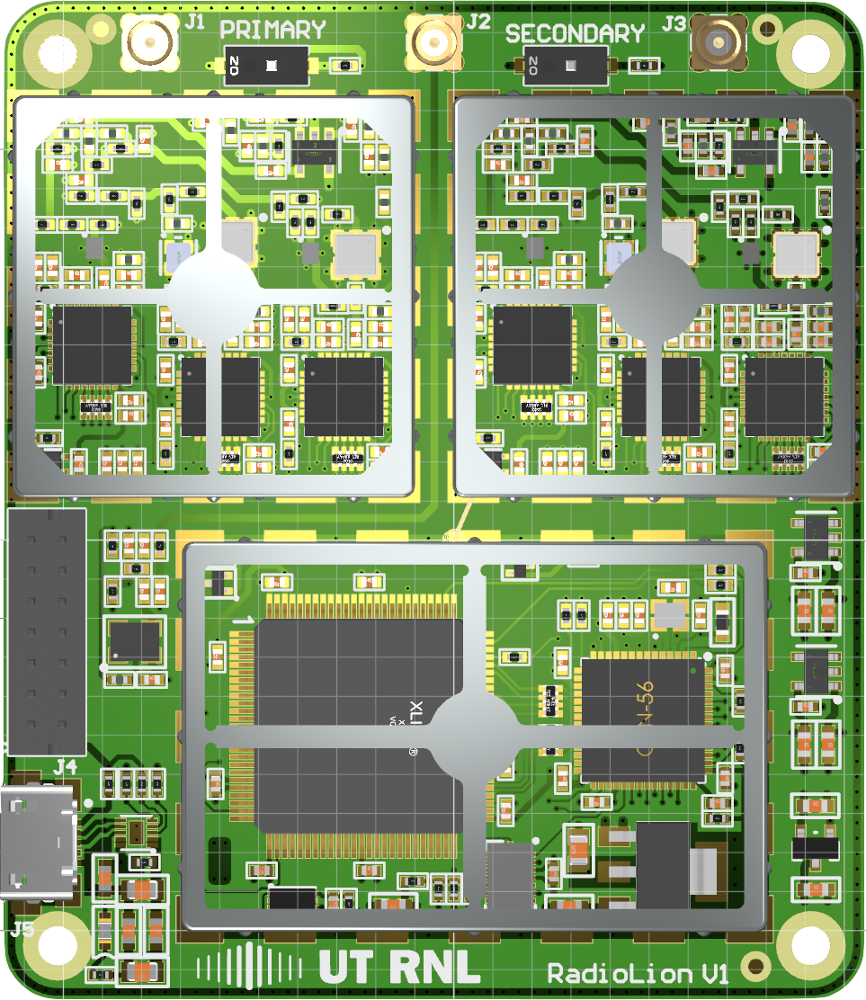

Antennas¶
The RadioLion board is a triple-frequency, dual-antenna front-end board, which means it simultaneously digitizes signals at three frequencies (GPS L1, L2, and L5) and from two antennas. Using two antennas is especially advantageous for rover receivers, as this (1) allows rover heading to be determined directly, (2) affords spatial diversity for more reliable precise solutions, and (3) offers a powerful defense against GNSS spoofing. A reference receiver can also benefit from dual-antenna input, but it’s not so important as for a rover receiver. Here is a list of triple-frequency antennas suitable for use with the RadioLion front end (not inclusive of all options).
Harxon GPS1000: These run about $210 each in low quantities.
Tallysman TW3972: These cost about $370 each in low quantities.
The RF input connector on the RadioLion board is an MMCX jack. You’ll need to ensure that the cable coming from the antenna terminates in an MMCX plug, or can be made to do so with the help of an adapter (e.g., an SMA-to-MMCX adapter). Ensure the primary antenna is connected to the MMCX jack (left) with the label «primary» and the secondary antenna is connected to the MMCX jack (right) with the label «secondary». See picture below:
{kind=link}